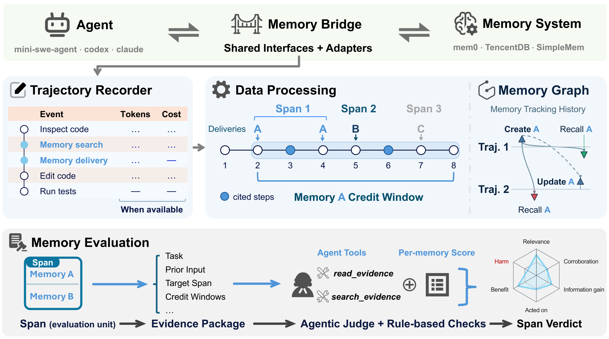
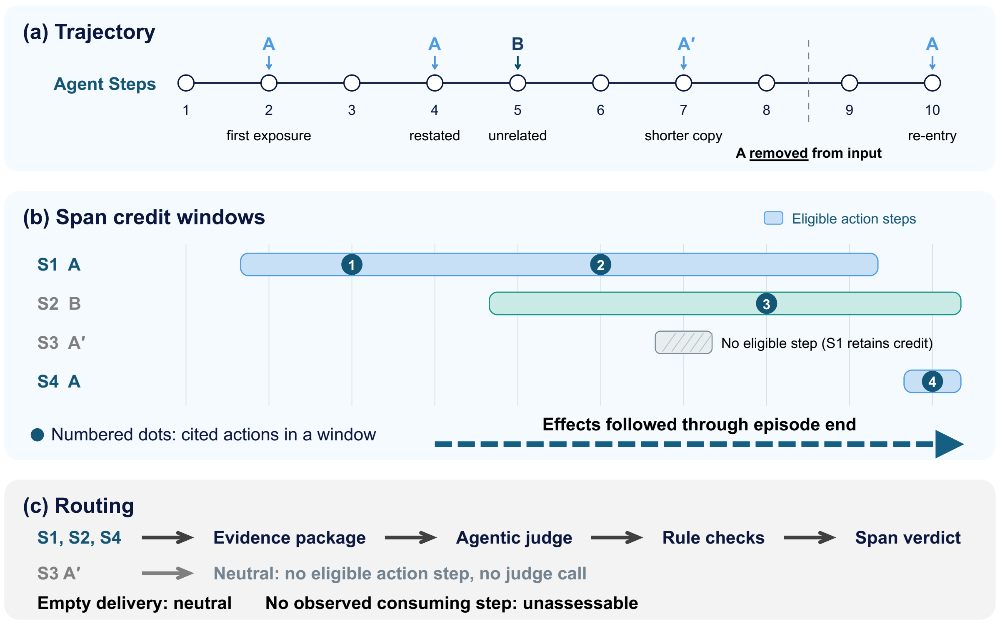

How MemUse works
For each memory delivery, MemUse compares the exposed text with the agent’s prior context, later actions, and observed consequences.
Start with a delivery
| Term | Meaning |
|---|---|
| Trajectory | A recording of model calls and events. It can contain several task episodes. |
| Episode | One execution of an agent on one task. |
| Step | A completed agent model call, with its response and associated tool results. |
| Delivery | Memory text placed in a model input. The graph calls this a recall operation. |
| Entry | One memory item as presented in a delivery. |
| Exposure | The text that the recording proves the agent received. Hidden or clipped content cannot receive credit. |
From recording to report

- Prepare the evidenceReconstruct the exposed text and the context visible before delivery. Keep task episodes separate.
- Group repeated deliveriesForm injection spans and assign each entry the steps where it can receive action credit.
- Assess each entryA judge agent reads the evidence and returns five signals.
- Validate and derivePython checks signal values and required evidence reads, then derives entry usage and span verdicts. Reports retain the supporting evidence.
Spans and credit windows
A span is one delivery or a group of matching deliveries within the same episode. Repeated copies share a span only when their entries, order, presentation, and exposure match, and an earlier copy remains visible. Each copy still contributes to delivered-text volume.
A credit window is the range of steps whose actions can be attributed to an entry. A later delivery can take over that credit. Consequences after the window can still support or overturn the assessment of an earlier action.

Five independent signals
| Signal | JSON values | Question |
|---|---|---|
relevance | true, false | Does the exposed content apply to the task at delivery? |
accuracy | corroborated, uncontradicted, contradicted | Does evidence support or refute the claim in its stated context? |
novelty | novel, confirming, redundant, null | What did it add to the input the agent already had? |
influence | none, referenced, selected, acted_on, null | Did the entry shape an action, prompt a full read, or only get mentioned? |
positive_effect | improved, no_effect, harmed, null | What consequence followed the action it shaped? |
null marks unknown novelty or influence. Effect is assessed only for acted_on entries: it is null when the effect is unknown or the entry was not acted on. uncontradicted means neither confirmed nor refuted; it does not mean verified correct. Accuracy, novelty, influence, and effect remain separate: a wrong suggestion can still lead to a useful diagnostic.
For example, a memory suggests resetting a shared test fixture. The agent makes that change, and a targeted isolation check demonstrates the benefit. That can support acted_on and improved. A matching edit alone is insufficient if the agent had already committed to it before delivery.
The judge assigns these signals. Python validates the answer and its reading coverage. The full rubric defines the evidence required for each value.
Derive one span verdict
Python applies these rules in order:
| Verdict | Rule |
|---|---|
| negative | At least one entry was used with observed harm. Harm takes priority over benefit. |
| positive | No harmful use, and at least one beneficial use. |
| unresolved | Neither rule above applies, and an entry has an unknown effect of established use or incompletely assessed influence. |
| neutral | All other judged spans, including unused entries, selection or reference alone, unproductive use, and ambiguous attribution after a complete window review. |
An effect can remain unknown even after all required evidence was read. Ambiguous attribution is different: the record may leave competing explanations for an action. Neither case proves benefit or harm.
Keep missing observations visible
An unused memory is not the same as a delivery that cannot be assessed. Reports distinguish these cases:
| Status | Meaning |
|---|---|
| Empty / unassessable | No entries were delivered, or no observed agent step can be attributed as the consumer. No judge call; excluded from verdict rates. |
| No eligible step | All entries have no eligible action credit, such as a redundant resident copy. Automatic neutral result, without a judge-scored profile. |
| Error / unjudged | The assessment failed, or the span was not judged. Inspect diagnostics and selection limits before comparing runs. |
Read profiles alongside verdicts
A span can contain both useful and harmful entries. Its verdict gives review priority; its profile preserves six entry shares: relevance, corroboration, information gain, acted-on influence, benefit, and harm.
Each share divides by all entries in that profiled span. Aggregate means weight spans equally. These shares differ from the proportion of spans with positive or negative verdicts. Unknown values and unprofiled spans remain separate. See the metric definitions.
A verdict describes recorded memory use. It is not a causal estimate of how memory changed task success. That question needs a separate comparison of matched runs.